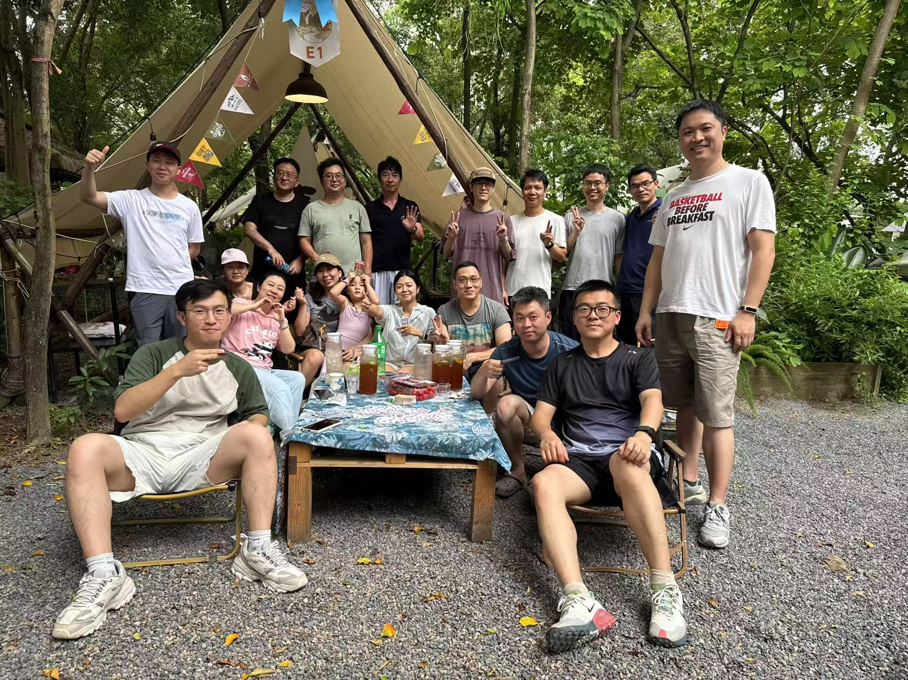
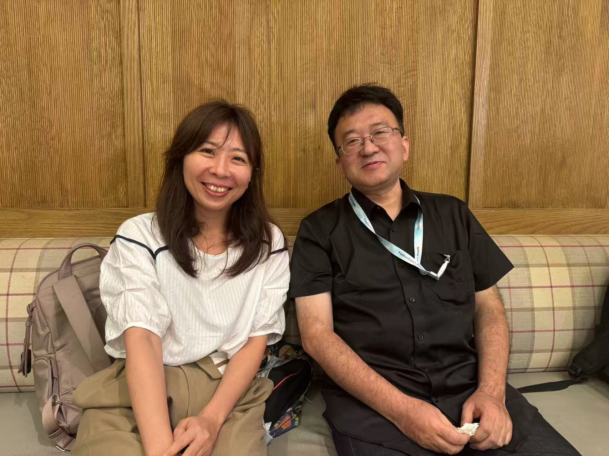
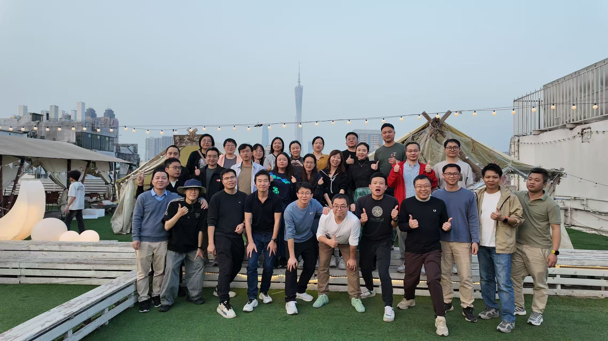

门外是照片，门里是我们的故事。那些一起认真、一起大笑的日子，都在这里。



照片在慢慢翻，回忆在等你开口。
从 2023 年的第一步，到每一次并肩的瞬间。今天，把我们的故事再讲一遍。
故事里的主角，是每一个我们。点开照片，也许你就是最好的讲述人。
抽到哪张，就请在场的伙伴讲讲那一天。
每张都算数，每段回忆都值得被听见。
116 张惊喜等你
已经打开 0 / 116 段回忆
本轮不重复抽取，进度保存在这个浏览器。
116 张照片，都在这里。点开一张，给回忆添上旁白。
这里还没有照片。换个筛选，或给一张照片写下故事吧。
故事保存在当前浏览器，不会自动同步给其他人。活动前后，记得导出一份备份。
只清空抽签进度，已经写好的故事会保留。